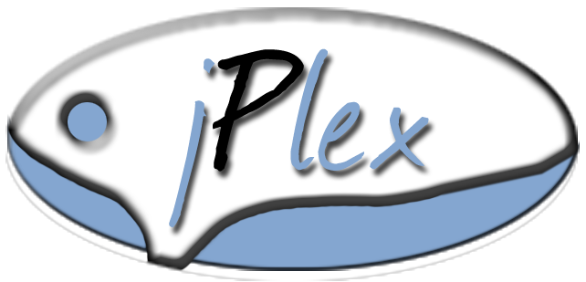

<!DOCTYPE HTML PUBLIC "-//W3C//DTD HTML 4.01 Transitional//EN" "http://www.w3.org/TR/html4/loose.dtd">
<html>
<head>
    <meta http-equiv="Content-Type" content='text/html; charset=UTF-8'/>
    <link rel="stylesheet" href="syntax-highlighter-1.5.1/css/SyntaxHighlighter.css" type="text/css"/>
    <link rel="stylesheet" href="../src/jplex/components/menubar/assets/menubar.css" type="text/css"/>
    <link rel="stylesheet" href="../src/jplex/components/window/assets/window.css" type="text/css"/>
    <script src="../src/jPlex.js" type="text/javascript" charset="utf-8">
    </script>
    <script src="./syntax-highlighter-1.5.1/syntax-highlighter.js" type="text/javascript" charset="utf-8">
    </script>
    <style type="text/css">
        body {
            font-family: "Trebuchet MS", sans-serif;
            font-size: 1.2em;
            background: url( img/eire.jpg ) no-repeat;
            background-size: 100%;

        }

        div.menubar {
            top: 0;
            left: 0;
            position: absolute;
        }

        div#remote-pic-modal div.body,
            div#local-pic div.body {
            padding: 0
        }

        div#what {
            width: 40%;
            text-align:justify;
        }  
        div#about {
            width: 40%;
            text-align:justify;
        }
        div#about table {
            text-align:center;
        }
    </style>
</head>
<body>

<script type="text/javascript">
    <!--
    jPlex.include("jplex.components.MenuBar");        
    var Window = jPlex.include('jplex.components.Window');
    jPlex.include('jplex.components.window.WindowsGroup');
    var g = new WindowsGroup('test');
    var first = g.add('what');
    var what = "<p><h3>Welcome to jPlex Pangolin!</h3>" +
               "jPlex is a javascript library that provides a set of usual user-interface components and some "+ 
               "functions to help the everyday's life of a webdevelopper. It focuses on components that you can find "+
               "on each web-application like calendar, menubar or windows. <br/><br/>You are on the provided window system "+
               "<br/>Look on top of this page, you can see the menubar for further demo. Enjoy!"
               "</p>" ;
    first.setBody("" + what);
    first.setTitle("Welcome!");

    function clickHandler() {
        alert("Coin");
    }

    var myData = [{
        name: "File",
        items: [{
            name: "New...",
            icon: "img/001.png",
            items: [{
                name: "Window...",
                items: [{
                    name: "Modal",
                    click: clickHandler,
                    keySC: {
                        key: Event.Key.M,
                        ctrl: true,
                        text: "Ctrl + M"
                    }
                }, {
                    name: "Dialog",
                    click: clickHandler,
                    keySC: {
                        key: Event.Key.D,
                        ctrl: true,
                        text: "Ctrl + D"
                    }
                }]
            }, {
                name: ""
            }, ]
        }, {
            name: "Download jPlex",
            items: [{
                name: "Pangolin Compressed"
            }, {name: "Pangolin Source"}]
        }, {
            name: "Close",
            keySC: {
                key: Event.Key.W,
                ctrl: true,
                text: "Ctrl + W"
            }
        }]
    }, {
        name: "jPlex",
        items:[{
            name:"Homepage",
            icon:"img/031.png",
            link:"http://www.google.fr"
        }, {
            name:"Documentation"
        }, {
            name:"Example"
        }]
    },
        {
            name: "Help",
            items:[{
                name:"What do I see ?"
            }, {
                name:"About",
                click: function() {
                    if(!(about = $C("about"))) {
                    var about = new Window('about', {draggable:true, modal:true});
                    about.setBody("<h3>jPlex release &alpha;-Pangolin</h3>"+
                               "Main contributors: <ul><li>Jean-Luc Dagon</li><li>Loic Petit</li></ul>"+
                               "Version: <table width='100%' border=0><tr><td>jPlex</td></td>Prototype</td><td>Scriptaculous</td></tr>"+
                                          "<tr><td>"+jPlex.version+"</td><td>"+Prototype.Version+"</td><td>"+Scriptaculous.Version+"</td></tr></table>");                    
                    about.setTitle("About");
                    } 
                    about.show();
                }
            }]
        }];
    var m = new MenuBar("menubar", {data:myData});
    //-->
</script>
</body>
</html>